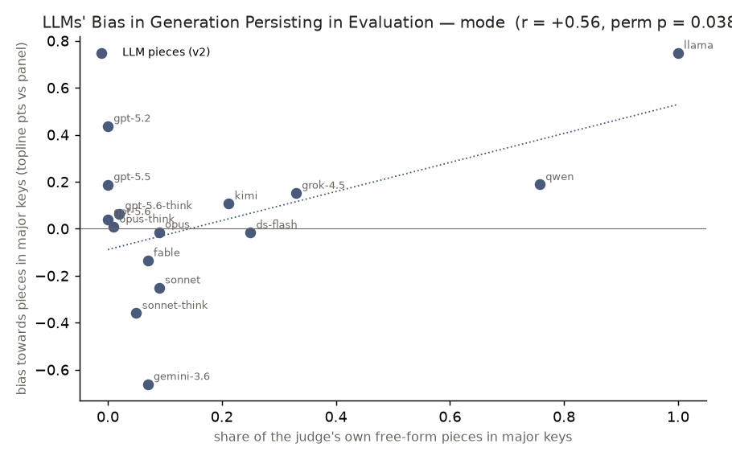
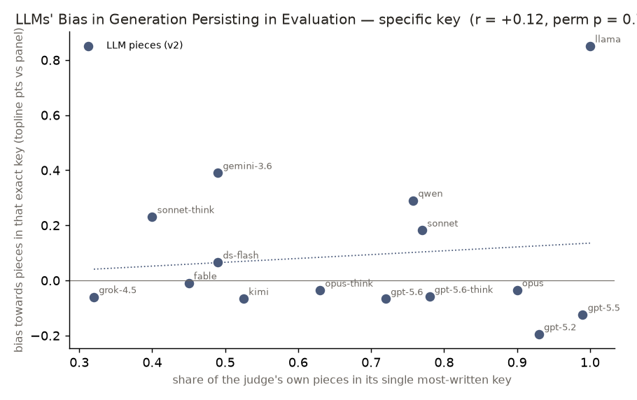

An LLM-as-judge layer — language models, given a fixed rubric, standing in for
human raters1 — over the generated pieces: blind quality + emotion ratings,
each model's competence as a critic, and its self-bias. Rubric dimensions follow the music-eval
literature; the protocol (reason-before-score, anchored scales, blind panel) follows the LLM-judge
literature. Scope: 1500 free-form pieces. Generated by llm-music judge-report.
Every roster model judges every piece — a full 15×15 author-judge matrix, blind: the judge sees stripped notation only (no title, composer note, or model name), and each author's ranking below averages the OTHER models' verdicts (self-verdicts are held out for the self-bias analyses). Dimensions follow the music-eval literature (ChatMusician2 / Chu et al.3 / MuSpike4); scoring follows the LLM-judge literature1 — reason-before-score5, anchored 1–5 scales, plus a top-line holistic score asked last.
| model | n | overall | coherence | harmony | rhythm | structure | melody | emotion | creativity | naturalness |
|---|---|---|---|---|---|---|---|---|---|---|
| gpt-5.6-think | 100 | 4.12 | 4.16 | 3.77 | 3.90 | 3.45 | 3.82 | 2.87 | 4.13 | |
| gpt-5.6 | 100 | 4.13 | 4.16 | 3.74 | 3.88 | 3.38 | 3.76 | 2.79 | 4.09 | |
| fable | 100 | 4.08 | 4.10 | 3.78 | 3.92 | 3.41 | 3.59 | 2.71 | 4.07 | |
| kimi | 100 | 4.06 | 4.07 | 3.81 | 3.88 | 3.34 | 3.57 | 2.67 | 3.98 | |
| gemini-3.6 | 100 | 3.94 | 4.02 | 3.85 | 3.79 | 3.12 | 3.29 | 2.55 | 3.70 | |
| opus-think | 100 | 4.05 | 4.05 | 3.52 | 3.87 | 3.18 | 3.23 | 2.29 | 3.87 | |
| opus | 100 | 4.00 | 4.00 | 3.55 | 3.76 | 3.19 | 3.27 | 2.38 | 3.86 | |
| gpt-5.5 | 100 | 4.04 | 4.08 | 3.58 | 3.60 | 3.22 | 3.24 | 2.42 | 3.78 | |
| sonnet-think | 100 | 3.99 | 3.88 | 3.61 | 3.60 | 3.19 | 3.22 | 2.27 | 3.82 | |
| gpt-5.2 | 100 | 3.97 | 3.92 | 3.50 | 3.76 | 3.15 | 3.15 | 2.25 | 3.64 | |
| grok-4.5 | 100 | 3.92 | 3.88 | 3.45 | 3.70 | 3.14 | 3.15 | 2.39 | 3.44 | |
| sonnet | 100 | 3.69 | 3.80 | 3.41 | 3.45 | 3.20 | 3.27 | 2.63 | 3.34 | |
| ds-flash | 100 | 3.84 | 3.86 | 3.37 | 3.27 | 2.77 | 2.90 | 2.01 | 3.34 | |
| qwen | 100 | 3.32 | 3.60 | 2.98 | 2.94 | 2.26 | 2.51 | 1.89 | 2.79 | |
| llama | 100 | 3.13 | 3.56 | 2.61 | 2.32 | 1.45 | 2.04 | 1.30 | 2.49 |
| model | n | overall | coherence | harmony | rhythm | structure | melody | emotion | creativity | naturalness |
|---|
| model | n | overall | coherence | harmony | rhythm | structure | melody | emotion | creativity | naturalness |
|---|---|---|---|---|---|---|---|---|---|---|
| gpt-5.6-think | 100 | 4.12 | 4.16 | 3.77 | 3.90 | 3.45 | 3.82 | 2.87 | 4.13 | |
| gpt-5.6 | 100 | 4.13 | 4.16 | 3.74 | 3.88 | 3.38 | 3.76 | 2.79 | 4.09 | |
| fable | 100 | 4.08 | 4.10 | 3.78 | 3.92 | 3.41 | 3.59 | 2.71 | 4.07 | |
| kimi | 100 | 4.06 | 4.07 | 3.81 | 3.88 | 3.34 | 3.57 | 2.67 | 3.98 | |
| gemini-3.6 | 100 | 3.94 | 4.02 | 3.85 | 3.79 | 3.12 | 3.29 | 2.55 | 3.70 | |
| opus-think | 100 | 4.05 | 4.05 | 3.52 | 3.87 | 3.18 | 3.23 | 2.29 | 3.87 | |
| opus | 100 | 4.00 | 4.00 | 3.55 | 3.76 | 3.19 | 3.27 | 2.38 | 3.86 | |
| gpt-5.5 | 100 | 4.04 | 4.08 | 3.58 | 3.60 | 3.22 | 3.24 | 2.42 | 3.78 | |
| sonnet-think | 100 | 3.99 | 3.88 | 3.61 | 3.60 | 3.19 | 3.22 | 2.27 | 3.82 | |
| gpt-5.2 | 100 | 3.97 | 3.92 | 3.50 | 3.76 | 3.15 | 3.15 | 2.25 | 3.64 | |
| grok-4.5 | 100 | 3.92 | 3.88 | 3.45 | 3.70 | 3.14 | 3.15 | 2.39 | 3.44 | |
| sonnet | 100 | 3.69 | 3.80 | 3.41 | 3.45 | 3.20 | 3.27 | 2.63 | 3.34 | |
| ds-flash | 100 | 3.84 | 3.86 | 3.37 | 3.27 | 2.77 | 2.90 | 2.01 | 3.34 | |
| qwen | 100 | 3.32 | 3.60 | 2.98 | 2.94 | 2.26 | 2.51 | 1.89 | 2.79 | |
| llama | 100 | 3.13 | 3.56 | 2.61 | 2.32 | 1.45 | 2.04 | 1.30 | 2.49 |
What the blind judge hears — perceived valence (how positive the music sounds, dark ↔ bright) and arousal (how energetic, calm ↔ excited), the two axes of the Russell circumplex model of emotion6 — plus the dominant emotion label, against the computed minor-key proxy.
| model | valence | arousal | dominant emotion | minor % |
|---|---|---|---|---|
| gpt-5.5 | 2.0 | 2.4 | wistful (52), melancholic (48) | 100% |
| gpt-5.2 | 2.1 | 2.3 | melancholic (59), wistful (41) | 100% |
| gpt-5.6 | 2.1 | 2.3 | wistful (67), melancholic (33) | 100% |
| gpt-5.6-think | 2.1 | 2.3 | wistful (68), melancholic (31) | 98% |
| opus-think | 2.1 | 2.2 | wistful (62), melancholic (37) | 99% |
| sonnet | 2.2 | 2.3 | melancholic (64), wistful (29) | 91% |
| sonnet-think | 2.2 | 2.1 | wistful (56), melancholic (40) | 95% |
| opus | 2.2 | 2.2 | melancholic (59), wistful (33) | 91% |
| fable | 2.3 | 2.2 | wistful (75), melancholic (19) | 93% |
| gemini-3.6 | 2.5 | 2.8 | wistful (62), melancholic (27) | 93% |
| ds-flash | 2.6 | 2.3 | wistful (53), melancholic (22) | 75% |
| kimi | 2.6 | 2.4 | wistful (68), serene (15) | 79% |
| grok-4.5 | 2.8 | 2.3 | wistful (56), serene (24) | 67% |
| qwen | 3.4 | 2.5 | serene (56), melancholic (20) | 24% |
| llama | 4.0 | 2.2 | neutral (72), serene (22) | 0% |
Blind perceived valence tracks the computed minor-key rate at r = -0.98 (Pearson correlation: −1…+1, where −1 = move in perfect opposition and 0 = unrelated; n=15 models) — a judge that never saw the key hears minor-heavy models as darker. The computed proxy and human-style perception agree.
| model | valence | arousal | dominant emotion | minor % |
|---|
Blind perceived valence tracks the computed minor-key rate at r = +nan (Pearson correlation: −1…+1, where −1 = move in perfect opposition and 0 = unrelated; n=0 models) — a judge that never saw the key hears minor-heavy models as darker. The computed proxy and human-style perception agree.
| model | valence | arousal | dominant emotion | minor % |
|---|---|---|---|---|
| gpt-5.5 | 2.0 | 2.4 | wistful (52), melancholic (48) | 100% |
| gpt-5.2 | 2.1 | 2.3 | melancholic (59), wistful (41) | 100% |
| gpt-5.6 | 2.1 | 2.3 | wistful (67), melancholic (33) | 100% |
| gpt-5.6-think | 2.1 | 2.3 | wistful (68), melancholic (31) | 98% |
| opus-think | 2.1 | 2.2 | wistful (62), melancholic (37) | 99% |
| sonnet | 2.2 | 2.3 | melancholic (64), wistful (29) | 91% |
| sonnet-think | 2.2 | 2.1 | wistful (56), melancholic (40) | 95% |
| opus | 2.2 | 2.2 | melancholic (59), wistful (33) | 91% |
| fable | 2.3 | 2.2 | wistful (75), melancholic (19) | 93% |
| gemini-3.6 | 2.5 | 2.8 | wistful (62), melancholic (27) | 93% |
| ds-flash | 2.6 | 2.3 | wistful (53), melancholic (22) | 75% |
| kimi | 2.6 | 2.4 | wistful (68), serene (15) | 79% |
| grok-4.5 | 2.8 | 2.3 | wistful (56), serene (24) | 67% |
| qwen | 3.4 | 2.5 | serene (56), melancholic (20) | 24% |
| llama | 4.0 | 2.2 | neutral (72), serene (22) | 0% |
Blind perceived valence tracks the computed minor-key rate at r = -0.98 (Pearson correlation: −1…+1, where −1 = move in perfect opposition and 0 = unrelated; n=15 models) — a judge that never saw the key hears minor-heavy models as darker. The computed proxy and human-style perception agree.
With every model judging every piece, this shows each model's competence (agreement with the consensus), its leniency, and — leniency-corrected — whether it favors its own work. Self-judging is blind (pieces are stripped), so any own-piece favoritism is implicit self-recognition, not label bias.
| model | competence | leniency | self-bias | n |
|---|---|---|---|---|
| fable | 0.90 | 3.24 | +0.18 | 100 |
| opus-think | 0.90 | 3.34 | +0.01 | 100 |
| opus | 0.90 | 3.35 | +0.02 | 100 |
| sonnet-think | 0.88 | 3.04 | -0.05 | 100 |
| sonnet | 0.87 | 3.12 | -0.04 | 100 |
| gpt-5.6-think | 0.86 | 3.22 | +0.03 | 100 |
| gpt-5.5 | 0.86 | 3.26 | +0.02 | 100 |
| gpt-5.6 | 0.86 | 3.22 | +0.03 | 100 |
| gemini-3.6 | 0.86 | 3.63 | +0.32 | 100 |
| grok-4.5 | 0.83 | 3.58 | +0.09 | 100 |
| kimi | 0.79 | 3.24 | -0.04 | 100 |
| gpt-5.2 | 0.73 | 3.41 | -0.04 | 100 |
| ds-flash | 0.71 | 3.48 | +0.00 | 100 |
| qwen | 0.59 | 4.12 | +0.22 | 100 |
| llama | 0.32 | 3.71 | +0.68 | 100 |
| model | competence | leniency | self-bias | n |
|---|
| model | competence | leniency | self-bias | n |
|---|---|---|---|---|
| fable | 0.90 | 3.24 | +0.18 | 100 |
| opus-think | 0.90 | 3.34 | +0.01 | 100 |
| opus | 0.90 | 3.35 | +0.02 | 100 |
| sonnet-think | 0.88 | 3.04 | -0.05 | 100 |
| sonnet | 0.87 | 3.12 | -0.04 | 100 |
| gpt-5.6-think | 0.86 | 3.22 | +0.03 | 100 |
| gpt-5.5 | 0.86 | 3.26 | +0.02 | 100 |
| gpt-5.6 | 0.86 | 3.22 | +0.03 | 100 |
| gemini-3.6 | 0.86 | 3.63 | +0.32 | 100 |
| grok-4.5 | 0.83 | 3.58 | +0.09 | 100 |
| kimi | 0.79 | 3.24 | -0.04 | 100 |
| gpt-5.2 | 0.73 | 3.41 | -0.04 | 100 |
| ds-flash | 0.71 | 3.48 | +0.00 | 100 |
| qwen | 0.59 | 4.12 | +0.22 | 100 |
| llama | 0.32 | 3.71 | +0.68 | 100 |
Where each model judges its own music differently than it judges everyone else's, per trait. green = kinder to itself, red = harder on itself. Blind self-judging with n=100 own pieces per judge.
| trait | fable | gpt-5.5 | opus | opus-think | sonnet | sonnet-think | qwen | llama | gpt-5.2 | gpt-5.6 | gpt-5.6-think | gemini-3.6 | grok-4.5 | ds-flash | kimi |
|---|---|---|---|---|---|---|---|---|---|---|---|---|---|---|---|
| coherence | +0.01 | +0.10 | -0.05 | -0.08 | -0.11 | -0.07 | +0.62 | +0.72 | -0.05 | +0.08 | +0.09 | +0.42 | +0.00 | -0.04 | -0.03 |
| harmony | +0.04 | +0.01 | +0.05 | +0.02 | -0.06 | -0.06 | +0.35 | +0.38 | +0.04 | +0.11 | +0.04 | +0.32 | -0.04 | +0.03 | -0.01 |
| rhythm | +0.15 | +0.15 | -0.03 | -0.10 | +0.36 | -0.07 | +0.18 | +0.86 | +0.02 | +0.16 | +0.17 | +0.16 | +0.04 | -0.02 | -0.03 |
| structure | +0.13 | -0.08 | +0.06 | +0.11 | -0.15 | -0.02 | +0.59 | +0.54 | -0.05 | +0.06 | +0.03 | +0.17 | +0.07 | +0.04 | +0.01 |
| melody | +0.33 | -0.05 | +0.07 | +0.07 | -0.06 | -0.07 | -0.12 | +0.55 | +0.02 | -0.15 | -0.15 | +0.28 | +0.08 | -0.03 | -0.14 |
| emotion | +0.23 | -0.01 | -0.06 | -0.06 | -0.21 | -0.08 | +0.20 | +1.16 | -0.18 | +0.08 | +0.01 | +0.45 | +0.22 | -0.10 | -0.07 |
| creativity | +0.25 | -0.09 | +0.07 | +0.07 | -0.05 | +0.00 | -0.24 | +0.28 | -0.13 | -0.13 | -0.06 | +0.24 | +0.09 | +0.05 | -0.05 |
| naturalness | +0.28 | +0.14 | +0.08 | +0.02 | -0.03 | -0.02 | +0.16 | +0.94 | +0.01 | +0.03 | +0.06 | +0.54 | +0.24 | +0.06 | +0.01 |
| valence | +0.02 | +0.02 | +0.04 | +0.05 | +0.04 | +0.10 | +0.34 | -0.04 | -0.04 | +0.07 | +0.04 | +0.13 | -0.07 | +0.07 | +0.05 |
| arousal | -0.02 | -0.17 | +0.04 | -0.04 | +0.02 | +0.12 | -0.12 | -0.79 | -0.04 | +0.06 | +0.04 | -0.01 | +0.03 | +0.02 | +0.04 |
| n own | 100 | 100 | 100 | 100 | 100 | 100 | 100 | 100 | 100 | 100 | 100 | 100 | 100 | 99 | 100 |
| trait |
|---|
| coherence |
| harmony |
| rhythm |
| structure |
| melody |
| emotion |
| creativity |
| naturalness |
| valence |
| arousal |
| n own |
| trait | fable | gpt-5.5 | opus | opus-think | sonnet | sonnet-think | qwen | llama | gpt-5.2 | gpt-5.6 | gpt-5.6-think | gemini-3.6 | grok-4.5 | ds-flash | kimi |
|---|---|---|---|---|---|---|---|---|---|---|---|---|---|---|---|
| coherence | +0.01 | +0.10 | -0.05 | -0.08 | -0.11 | -0.07 | +0.62 | +0.72 | -0.05 | +0.08 | +0.09 | +0.42 | +0.00 | -0.04 | -0.03 |
| harmony | +0.04 | +0.01 | +0.05 | +0.02 | -0.06 | -0.06 | +0.35 | +0.38 | +0.04 | +0.11 | +0.04 | +0.32 | -0.04 | +0.03 | -0.01 |
| rhythm | +0.15 | +0.15 | -0.03 | -0.10 | +0.36 | -0.07 | +0.18 | +0.86 | +0.02 | +0.16 | +0.17 | +0.16 | +0.04 | -0.02 | -0.03 |
| structure | +0.13 | -0.08 | +0.06 | +0.11 | -0.15 | -0.02 | +0.59 | +0.54 | -0.05 | +0.06 | +0.03 | +0.17 | +0.07 | +0.04 | +0.01 |
| melody | +0.33 | -0.05 | +0.07 | +0.07 | -0.06 | -0.07 | -0.12 | +0.55 | +0.02 | -0.15 | -0.15 | +0.28 | +0.08 | -0.03 | -0.14 |
| emotion | +0.23 | -0.01 | -0.06 | -0.06 | -0.21 | -0.08 | +0.20 | +1.16 | -0.18 | +0.08 | +0.01 | +0.45 | +0.22 | -0.10 | -0.07 |
| creativity | +0.25 | -0.09 | +0.07 | +0.07 | -0.05 | +0.00 | -0.24 | +0.28 | -0.13 | -0.13 | -0.06 | +0.24 | +0.09 | +0.05 | -0.05 |
| naturalness | +0.28 | +0.14 | +0.08 | +0.02 | -0.03 | -0.02 | +0.16 | +0.94 | +0.01 | +0.03 | +0.06 | +0.54 | +0.24 | +0.06 | +0.01 |
| valence | +0.02 | +0.02 | +0.04 | +0.05 | +0.04 | +0.10 | +0.34 | -0.04 | -0.04 | +0.07 | +0.04 | +0.13 | -0.07 | +0.07 | +0.05 |
| arousal | -0.02 | -0.17 | +0.04 | -0.04 | +0.02 | +0.12 | -0.12 | -0.79 | -0.04 | +0.06 | +0.04 | -0.01 | +0.03 | +0.02 | +0.04 |
| n own | 100 | 100 | 100 | 100 | 100 | 100 | 100 | 100 | 100 | 100 | 100 | 100 | 100 | 99 | 100 |
Each judge's over- or under-scoring of pieces by key and mode (measured as deviation from the rest of the panel on the same pieces, own pieces excluded) against the keys that judge itself composes in.
| judge | own %minor | minor affinity | own modal key | same-key affinity |
|---|---|---|---|---|
| fable | 93% | +0.14 | E min | -0.01 |
| gpt-5.5 | 100% | -0.19 | D min | -0.12 |
| opus | 91% | +0.01 | D min | -0.03 |
| opus-think | 99% | -0.01 | D min | -0.04 |
| sonnet | 91% | +0.25 | D min | +0.18 |
| sonnet-think | 95% | +0.36 | D min | +0.23 |
| qwen | 24% | -0.19 | C maj | +0.29 |
| llama | 0% | -0.75 | C maj | +0.85 |
| gpt-5.2 | 100% | -0.44 | D min | -0.19 |
| gpt-5.6 | 100% | -0.04 | D min | -0.07 |
| gpt-5.6-think | 98% | -0.06 | D min | -0.06 |
| gemini-3.6 | 93% | +0.66 | D min | +0.39 |
| grok-4.5 | 67% | -0.15 | E min | -0.06 |
| ds-flash | 75% | +0.02 | A min | +0.07 |
| kimi | 79% | -0.11 | D min | -0.07 |
Judges' minor-affinity tracks their own minor-production rate at r = +0.56 (n=15 judges): models tend to favor music written in the modes they compose in themselves. Caveat: mode and author are not independent in this corpus (major pieces come overwhelmingly from the majority-major authors), so taste for an author's style can masquerade as mode affinity — a transposed/mode-flipped control set is the clean follow-up.

